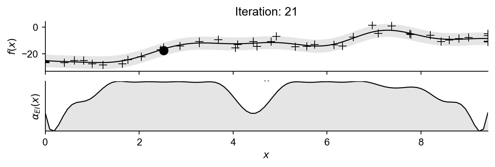
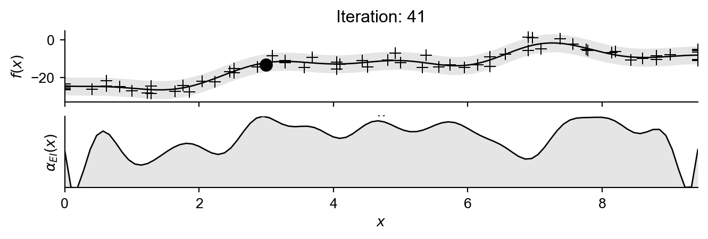

Definition of underlying function…
def f(x):
return 2.4*np.sin(2.8*x) - ((x-3.5*np.pi) ** 2)/4 + 3.8*np.cos(1.7*x) - (x**2)/16 + np.random.normal(0,2)I have reworked some notes from (garnett_bayesoptbook_2023?) regarding noisy-expected improvement. Please refer to the original text for a more detailed explanation.
The assumptions that hold for the expected improvement utility function do not hold when measurements have noise.
We really want to find the point where the signal is optimised (Jones, Schonlau, and Welch 1998).
How do you determine if a measurement is signal or noise?
We begin by specifying an underlying objective function, which we consider unknown, shown in Figure 1. We have access to observations which we assume contain normally distributed noise.
def f(x):
return 2.4*np.sin(2.8*x) - ((x-3.5*np.pi) ** 2)/4 + 3.8*np.cos(1.7*x) - (x**2)/16 + np.random.normal(0,2)
We first begin by motivating the usual expected-improvement criteria. We are looking to maximise the expected increase between the of the maximum of the mean of the resulting Gaussian process after making an observation at \(x\) and the maximum of the current Gaussian process over potential observations \(y\) which are Gaussian distributed as a result of our \(\mathcal{GP}\) model. \[\alpha_{EI}(x;\mathcal{D}) = {\color{red}\int} \left[{\color{green}\max \mu_{\mathcal{D}'}} - {\color{blue}\mu^*}\right]{\color{red}\mathcal{N}(y;\mu,s^2)\text{d}y} \tag{1}\]
By formulating the expression with respect to the improvement in the mean of the current and subsequent Gaussian process models, we are expressing our interest in optimising the signal and not the noise or values of specific observations.
Important: Given a hypothetical observation \(y\), the value of the mean of the resulting Gaussian process \(\mu_{\mathcal{D}'}\) at given set of potential locations \(\mathbf{x}'\) is
\[ \mu_{\mathcal{D}'} = \mu_{\mathcal{D}} + \frac{K_\mathcal{D}(\mathbf{x}',x)}{s}\frac{y-\mu}{s},\]
where \(\mu\) and \(s^2\) are the mean and standard deviation of the distribution of potential values \(y\) could take.
When we express this distribution in terms of the standard normal distribution \(z := \mathcal{N}(0,1)\), we have \(y = \mu + sz\) and as a result
\[ \mu_{\mathcal{D}'} = \mu_{\mathcal{D}}(\mathbf{x}') + \frac{K_\mathcal{D}(\mathbf{x}',x)}{s}z.\]
Putting this back into Equation 1, we now only have to take the expectation over the standard normal distribution resulting in the following.
\[\alpha_{EI}(x,\mathcal{D}) = \int \max_{\mathbf{x}'} \left(\mu_{\mathcal{D}}(\mathbf{x}') + \frac{K_\mathcal{D}(\mathbf{x}',x)}{s}z \right)\phi(z)\;\text{d}z - \mu^* \tag{2}\]
To begin with we will sample some initial data:
# our initial dataset
x_data = np.linspace(0,3*np.pi,24)
y_data = np.array([f(x_i) for x_i in x_data])class ExactGPModel(gpytorch.models.ExactGP):
def __init__(self, train_x, train_y, likelihood):
super(ExactGPModel, self).__init__(train_x, train_y, likelihood)
self.mean_module = gpytorch.means.ConstantMean()
self.covar_module = gpytorch.kernels.ScaleKernel(gpytorch.kernels.RBFKernel())
def forward(self, x):
mean_x = self.mean_module(x)
covar_x = self.covar_module(x)
return gpytorch.distributions.MultivariateNormal(mean_x, covar_x)
def build_GP(x,y,its):
likelihood = gpytorch.likelihoods.GaussianLikelihood()
model = ExactGPModel(x, y, likelihood)
model.train()
likelihood.train()
optimizer = torch.optim.Adam(model.parameters(), lr=0.1) # Includes GaussianLikelihood parameters
mll = gpytorch.mlls.ExactMarginalLogLikelihood(likelihood, model)
for i in range(its):
optimizer.zero_grad()
output = model(x)
loss = -mll(output, y)
loss.backward()
optimizer.step()
return model,likelihood
model,likelihood = build_GP(x_data,y_data,2000)
GP = {'model':model,'likelihood':likelihood}Figure 2 shows this data with an initial Gaussian process (importantly assuming in-exact observations).

Now we will naively construct Equation 2 using 40 samples from the standard normal distribution, and naively calculate an approximation to the inner maximisation by evaluating at 100 location throughout the space (which defines our vector \(\mathbf{x}' \in\mathbb{R}^{100}\)) and returning the max value from these.
def noisy_EI(x,GP):
model = GP['model']
likelihood = GP['likelihood']
N = torch.distributions.Normal(0,1)
predicted_output = likelihood(model(x))
mean = predicted_output.mean
var = predicted_output.variance
z_vals = torch.linspace(-2,2,40)
integral = 0
for z in z_vals:
x_prime_vals = torch.linspace(0,3*np.pi,100).reshape(-1,1)
new_mean_vals = model.mean_module(x_prime_vals)
new_cov_vals = ((model.covar_module(x_prime_vals,x)/var)*z.item())[:,0]
integral += torch.max(new_mean_vals + new_cov_vals)
integral /= 100
return -integralNow if we plot this function alongside the time taken to evaluate the acquisition function at 100 locations.
TIME TAKEN: 0.9433 s. AVERAGE TIME PER EVALUATION: 0.0094 s
Important: For a fixed set of ‘improvement locations’ \(\mathbf{x}'\), the resulting posterior mean at each location can be interpreted as a 1D line as a function of \(z\):
\[\mu_{\mathcal{D}'}(z|x') = \mu_{\mathcal{D}}(x') + \frac{K_{\mathcal{D}}(x',x)}{s}z \quad \forall x'\in \mathbf{x}'\]
Therefore finding the inner maximum new posterior mean as a function of \(z\) can be translated to calculating the upper envelope of a set of lines. This upper envelope represents for a given \(z\), the maximum posterior mean across all of the locations in $. The main idea is to remove the inner \(\max\) operator and replace it with something more tractable.
\[\int \max \left[\text{lines} (z)\right] \phi(z) \;\text{d}z \rightarrow \int \text{upper envelope} (z) \phi(z) \;\text{d}z\]
Which is tractable for a piecewise linear upper envelope.
For the sake of completeness we will set up and run a basic Bayesian optimisation loop, but I’ll just use a naive implementation for now.
def aq_and_grad(x,GP):
x = np.array(x,dtype=np.float32)
x = torch.from_numpy(x.reshape(-1,1))
x = torch.tensor(x, requires_grad=True)
aq = noisy_EI(x,GP)
aq.backward()
f_val = aq.detach().numpy()
f_grad = x.grad.numpy()[0]
return (-f_val,-f_grad)
def optimise_aq(GP):
x0_list = np.linspace(0,3*np.pi,16)
f_best = 1E10
x_best = None
for x0 in x0_list:
res = minimize(aq_and_grad, x0, method='L-BFGS-B', jac=True,
bounds=((0,3*np.pi),),args=(GP), options={'maxiter': 100})
if res.fun < f_best:
f_best = res.fun
x_best = res.x
return x_bestPlotting every 5 iterations, for a total of 50 iterations.
for iteration in range(50):
# train GP
model,likelihood = build_GP(x_data,y_data,2000)
GP = {'model':model,'likelihood':likelihood}
GP['model'].eval(); GP['likelihood'].eval()
# optimise acquisition function
x_best = optimise_aq(GP)
y_best = f(x_best)
# add to dataset
x_data = torch.cat((x_data,torch.tensor(x_best)))
y_data = torch.cat((y_data,torch.tensor(y_best)))
if (iteration) % 5 == 0:
fig,ax = plt.subplots(2,1,figsize=figsize,sharex=True)
ax[0] = plot_model(ax[0],GP,x_data,y_data,in_loop=iteration+1)
ax[1] = plot_aq(ax[1],GP)
plt.show()
